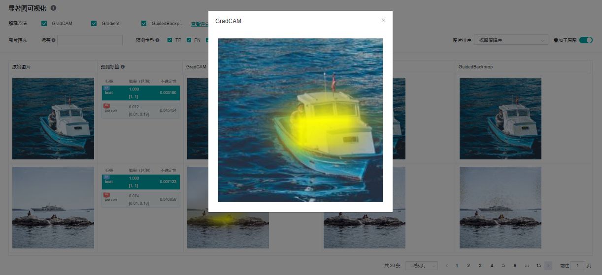

解释模型¶
Linux Ascend GPU 模型调优 初级 中级 高级

概述¶
当前深度学习模型多为黑盒模型，性能表现好但可解释性较差。模型解释模块旨在为用户提供对模型决策依据的解释，帮助用户更好地理解模型、信任模型，以及当模型出现错误时有针对性地改进模型效果。
在一些影响至关重要的应用场景中，如自动驾驶、金融决策等，由于法律和政策监管的原因，AI模型如果不具备可解释性，是无法真正落地应用的。所以模型的可解释性的重要性越来越高，受到越来越多的关注。因此，模型解释是提升MindSpore生态应用性、用户友好性至关重要的一部分。
具体来说，在图片分类任务中，较为广泛使用的一类解释方法会将影响模型的分类决策最关键的区域高亮出来，我们称之为“显著图”，如果被高亮的部分恰好就是相应标签的关键特征，那么通常说明模型学习到的特征是正确的，用户可以更加信任模型的效果和决策。如果模型关注的是不相关的部分，即使预测标签是正确的，也不代表模型是可靠的，模型开发者还是需要优化改进模型。造成这种情况有可能是训练数据中存在某些特征的相关性，模型开发者可以考虑有针对性的做数据增强来修正模型学习到的偏见。
除了提供多种解释方法，我们还提供了一套对解释方法效果评分的度量方法，从多种维度评估解释方法的效果，从而帮助用户比较和选择最适合于特定场景的解释方法。
操作流程¶
准备脚本¶
当前MindSpore提供解释方法及给解释方法进行评估的度量Python API，已提供的解释方法可以通过mindspore.explainer.explanation包获取，度量方法可以通过mindspore.explainer.benchmark包获取。用户准备好待解释的黑盒模型和数据，在脚本中根据需要实例化解释方法及度量方法，调用API用于收集解释结果和解释度量结果。
MindSpore还提供mindspore.explainer.ImageClassificationRunner运行模块，支持自动化运行所有解释方法和度量方法。用户将实例化的解释方法及度量方法进行注册，即可自动运行解释方法及度量方法，并生成及保存包含解释结果及解释度量结果的解释日志。
下面以ResNet50及带有20类多标签数据为例，用户初始化explanation中解释方法及benchmark中度量方法，调用ImageClassificationRunner进行解释和度量。其样例代码如下：
import mindspore.nn as nn
from mindspore import load_checkpoint, load_param_into_net
from mindspore.explainer.explanation import GradCAM, GuidedBackprop
from mindspore.explainer.benchmark import Faithfulness, Localization
from mindspore.explainer import ImageClassificationRunner
if __name__ == "__main__":
num_classes = 20
# please refer to model_zoo.cv.official.resnet.src.resnet50.py for the model architecture of resnet50
net = resnet50(num_classes)
param_dict = load_checkpoint("resnet50.ckpt")
load_param_into_net(net, param_dict)
# initialize explainers with the loaded black-box model
gradcam = GradCAM(net, layer='layer4')
guidedbackprop = GuidedBackprop(net)
# initialize benchmarkers to evaluate the chosen explainers
# for Faithfulness, the initialization needs an activation function that transforms the output of the network to a probability is also needed
activation_fn = nn.Sigmoid() # for multi-label classification
faithfulness = Faithfulness(num_labels=num_classes, metric='InsertionAUC', activation_fn=activation_fn)
localization = Localization(num_labels=num_classes, metric='PointingGame')
# returns the dataset to be explained, when localization is chosen, the dataset is required to provide bounding box
# the columns of the dataset should be in [image], [image, labels], or [image, labels, bbox] (order matters)
# You may refer to 'mindspore.dataset.project' for columns managements
dataset_path = "dataset_dir"
dataset = get_dataset(dataset_path)
# specify the class names of the dataset
classes = [
'aeroplane', 'bicycle', 'bird', 'boat', 'bottle', 'bus', 'car', 'cat',
'chair', 'cow', 'diningtable', 'dog', 'horse', 'motorbike', 'person',
'pottedplant', 'sheep', 'sofa', 'train', 'tvmonitor',
]
data = (dataset, classes)
explainers = [gradcam, guidedbackprop]
benchmarkers = [faithfulness, localization]
# initialize runner with specified summary_dir
runner = ImageClassificationRunner(summary_dir='./summary_dir', network=net, activation_fn=activation_fn, data=data)
runner.register_saliency(explainers, benchmarkers)
# execute runner.run to generate explanation and evaluation results to save it to summary_dir
runner.run()
使用限制¶
当前只支持图片分类下的CNN网络模型，比如：Lenet、Resnet、Alexnet。
输入的图片数据必须为单通道、三通道或四通道格式。
仅支持GPU和Ascend设备下的PyNative运行模式。
不同的
ImageClassificationRunner对象需要使用不同的解释方法及度量方法对象，所以用户必须针对每个ImageClassificationRunner对象实例化独占的解释方法及度量方法对象，否则可能会产生错误。下方是一个正确的实例化示例。
gradcam = GradCAM(net, layer='layer4')
guidedbackprop = GuidedBackprop(net)
runner = ImageClassificationRunner(summary_dir='./summary_dir_1', network=net, activation_fn=activation_fn, data=data)
runner.register_saliency(explainers=[gradcam, guidedbackprop])
runner.run()
# generate another summary with GradCAM only
runner2 = ImageClassificationRunner(summary_dir='./summary_dir_2', network=net, activation_fn=activation_fn, data=data)
# reusing explainer instance in other runner, errors may occur
# runner2.register_saliency(explainers=[gradcam])
# instantiating a new GradCAM is the correct way
gradcam2 = GradCAM(net, layer='layer4')
runner2.register_saliency(explainers=[gradcam2])
runner2.run()

页面及功能介绍¶
显著图可视化¶
显著图可视化用于展示对模型决策结果影响最为显著的图片区域，通常高亮部分可视为图片被标记为目标分类的关键特征。
进入显著图可视化界面，会展示：
用户通过Dataset的Python API接口设置的目标数据集。
真实标签、预测标签，以及模型对对应标签的预测概率。根据具体情况，系统会在对应标签的左上角增加TP，FN，FP（含义见界面提示信息）的旗标。
选中的解释方法给出的显著图。
界面操作：
通过界面上方的解释方法勾选需要的解释方法。
通过切换界面右上方的“叠加于原图”按钮可以选择让显著图叠加于原图上显示。
点击不同标签，显示模型对不同标签的显著图分析结果。对于不同的分类结果，通常模型的关注点也是不同的。
点选预测类型复选框，以显示具有已选类型的标签的图片：TP - 真阳性、 FN - 假阴性、 FP - 假阳性。
通过界面上方的标签筛选功能，筛选出指定标签图片。
通过界面右上角的图片排序改变图片显示的顺序，可选“概率值降序”或“不确定性值降序”。
点击解释方法最右边的“查看评分”，可以进入评估所有解释方法的界面。
点击图片可查看放大图。


不确定性¶
模型决策结果存有不确定性, 名为 Epistemic Uncertainty 。计算方法是在模型中插入dropout层再多次重复推理，最后得出输出概率的标准偏差和95%置信区间：
模型和数据集的准备、使用限制跟前述的解释方法相同，用户通过调用 ImageClassificationRunner 的 register_uncertainty() 来启用不确定性计算，下方是一个使用例子。
runner = ImageClassificationRunner(summary_dir='./summary_dir_1', network=net, activation_fn=activation_fn, data=data)
runner.register_saliency(explainers=[gradcam, guidedbackprop])
runner.register_uncertainty()
runner.run()
要注意的是 register_uncertainty() 必须跟 register_saliency()一起使用，但调用次序没有限制。
反事实¶
反事实是一种相对新的模型解释方法，是指对已得出的推理结果进行否定而重新表征。例如一张动物图片被模型分类为猫，我们可以通过解答反事实问题（例如：如何把这张图片进行编辑从而令其不会被模型分类为猫?）从而解释一个模型决策（例如：将这张图片分类为猫）。反事实解释存有不同的形式，ImageClassificationRunner 提供了一个容易使用的“基于遮掩的反事实（简称“HOC”）”接口。将来，会支持不同的反事实功能。
基于遮掩的反事实¶
HOC是一种基于遮掩的反事实方法，目的是在目标标签的预测概率高于阈值(暂固定为0.5)的约束条件下搜索出最小的图片显示区域。整个搜索是一个分层级的过程，首先把整个图片使用高斯模糊遮掩住，之后从最大的显示区块开始搜索，再深入搜索到更小的子区块以获得更精确的结果。最终我们会得到一个区块树，每一个节点代表一个正方形的显示区块，而子节点侧是在父节点范围内的更小的正方形显示区块。根节点代表了整个原始图片区域，而它的直接子节点就是第一层的显示区块。
目前，ImageClassificationRunner 会基于输入图片大小自动计算分层数量(一到三层)，显示区块大小，平移步幅及模糊遮掩图。第一层的显示区块边长为输入图片的短边的一半(向下舍入)，每下一层显示区块边长就会减半，最小为28个像素否则不会再增加下一层。平移步幅是显示区块边长的五分之一(向下舍入)。
模型和数据集的准备跟前述的解释方法相同，用户通过调用 ImageClassificationRunner 的 register_hierarchical_occlusion() 来启用HOC，下方是一个使用例子。
runner = ImageClassificationRunner(summary_dir='./summary_dir_1', network=net, activation_fn=activation_fn, data=data)
runner.register_hierarchical_occlusion()
runner.run()
用户可在同一个runner上配合使用 register_saliency() 。
基于遮掩的反事实使用限制¶
包括所有前述的使用限制，但只支持三通道输入的模型。
图片数据必须为RGB三通道格式，短边的长度必须大于或等于56像素。
在只调用了
register_hierarchical_occlusion()但没有调用register_saliency()的情况下，可以同时支持PyNative和Graph运行模式。
基于遮掩的反事实页面及功能介绍¶
可以看到在解释日志列表上所有使用了HOC功能的解释日志的”反事实解释”链接已经可被点击，点击后就会进入反事实页面。
基于遮掩的反事实解释页面展示了所有搜寻到的结果，包括：
所有预测概率大于0.5的目标标签的样本及其原始图片。
目标标签的预测概率。
搜索过程中每个分层的结果图及其预测概率。
界面操作：
在左侧“图片列表”面板右上方有个“隐藏”开关，当开关开启时页面将会隐藏不含HOC解释结果的数据。开关默认为开启，用户可选择关闭以显示所有数据。
在左侧“图片列表”面板选择要显示样本的标签筛选及排序方法，可以选择使用预测概率排序。
在左侧“图片列表”面板流览样本或翻页，当点击了一个样本图片后，相关的HOC搜索结果会在其他的面板上显示。
在中央“原始图片”面板选择要显示的标签搜寻结果，只有预测概率大于0.5的标签才有HOC搜索结果。
在下方“逐层遮掩过程”面板检视搜寻过程的分层结果图，当点击了一张结果图后，它会被放大显示在右侧“查看解释”面板上。 (注意: 为了区分显示，已遮掩的区域被降低了亮度及转成了灰阶，但在实际的搜索中只是使用了高斯模糊作遮掩，并没有对亮度或彩度进行调整。)